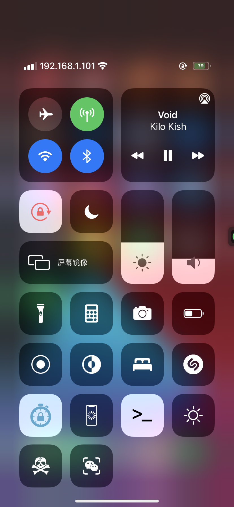

-
Show the current IP address in the status bar.

In this version
-
1.2
- No longer depends on curl.
- Re-write the method for getting the public IP.
- IPCarrier's "notification" is now properly dismissed when tapping the notification.
Previous updates
-
1.1.1
- Change status bar tap gesture to 2 taps.
-
1.1
- Add support for iPad.
- Tap the status bar on the home screen to show a window with more detailed iP info.
-
1.0.1
- Add support for cellular connections.
-
1.0.0
- Initial release.
No other updates found.
Known Issues
- No current issues.